아래의 타투 아이스트들은 각자의 독특한 작업 스타일과 타투로
각자의 개성을 표현해내는 작업자들입니다.
scroll down
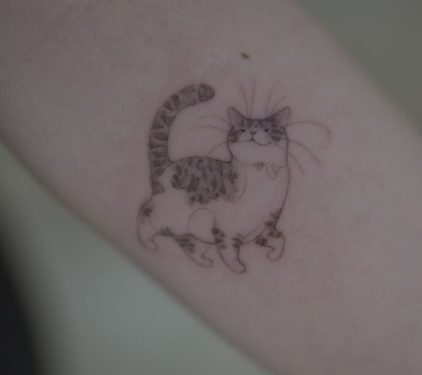
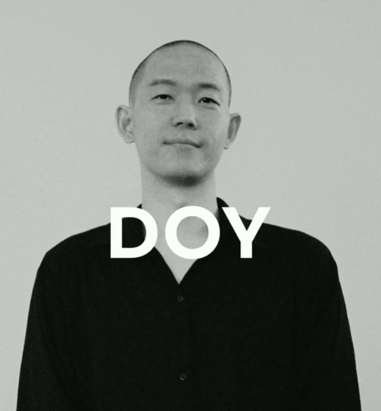
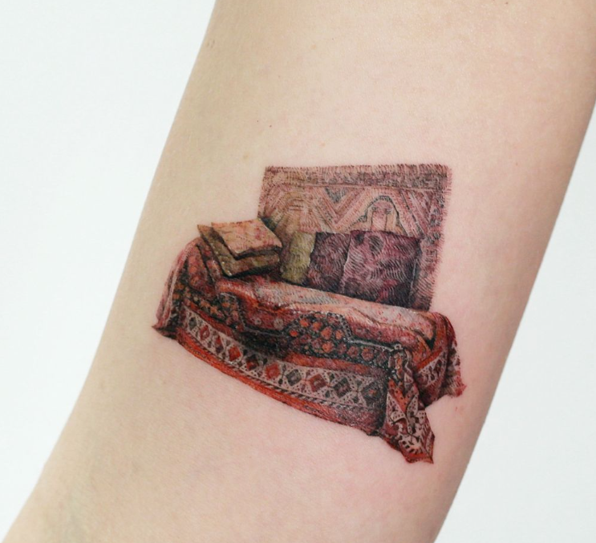
20년이 넘는 경력으로, 파인라인이라는 어려운 장르를 다루는 작업자입니다.
타투 합법화에 많은 힘을 쓰고 있는 작업자입니다.
INSTAGRAM : @tattooist_doy
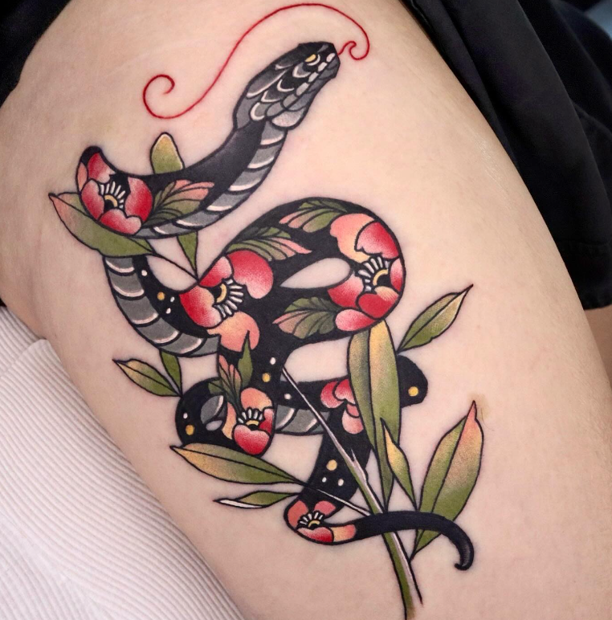
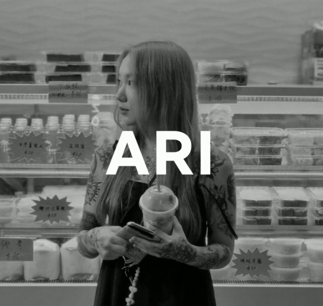
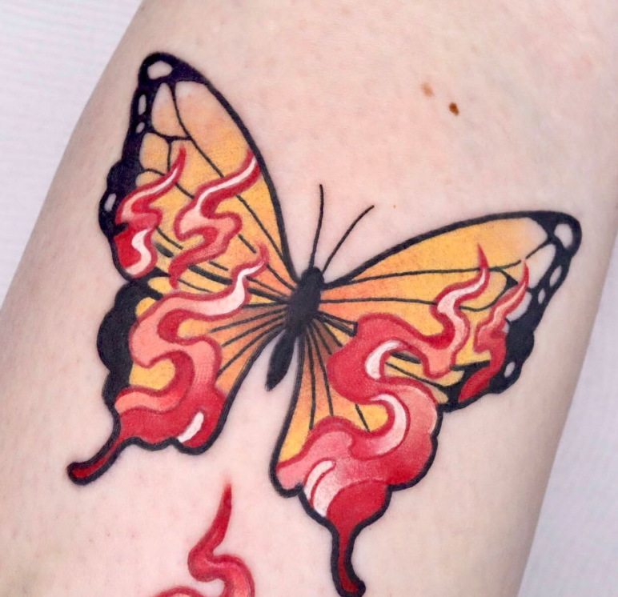
뉴스쿨 장르에서 더 나아가 여러 장르가 혼합된 스타일의 스쿨장르를 시도하는 작업자 입니다.
INSTAGRAM : @ari_tattooer
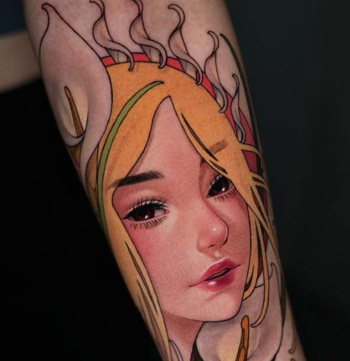
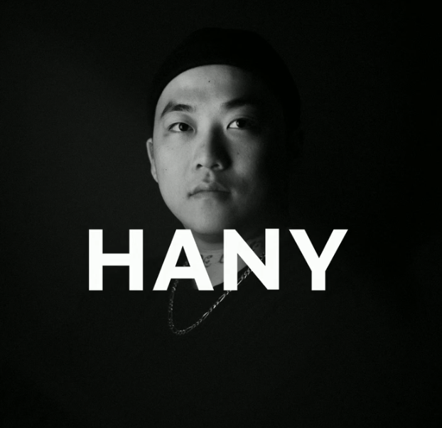
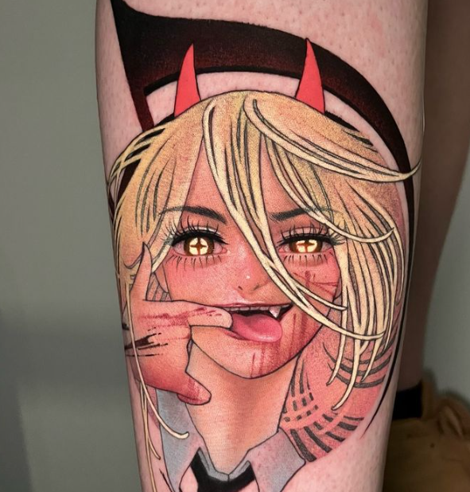
섬세한 2D 인물화를 주 장르로 하며, 디테일한 작업과 다양한 장르를 어우르는 작업자 입니다.
INSTAGRAM : @hanytattoostyle
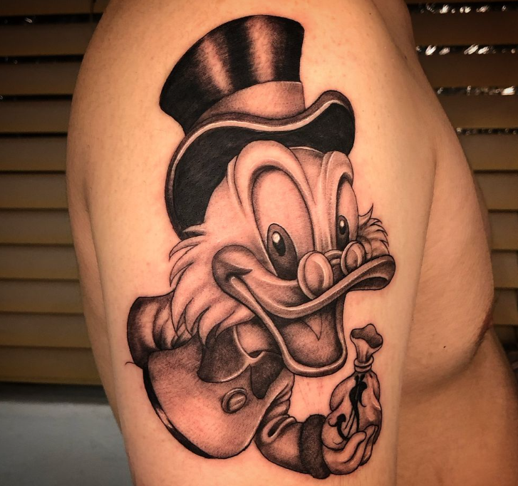
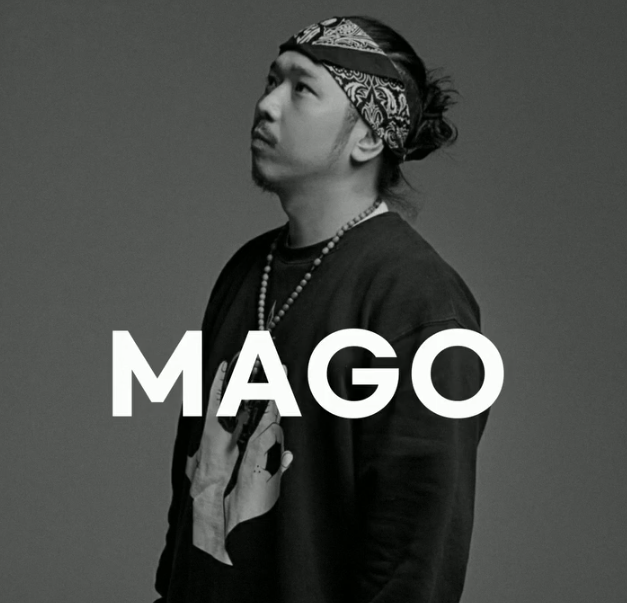
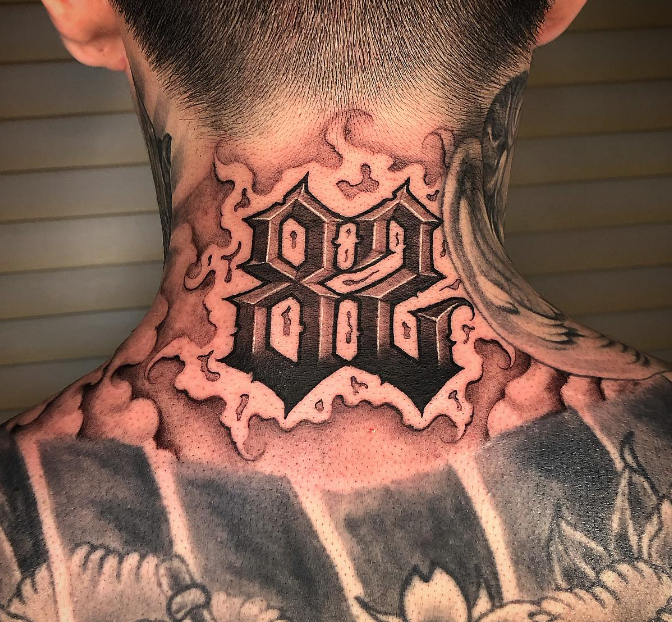
치카노 스타일의 모든 문화를 사랑하며, 변함없이 실력의 꾸준함을 보여주시는 최고의 치카노 작업자입니다.
INSTAGRAM : @chicano_mr.mago
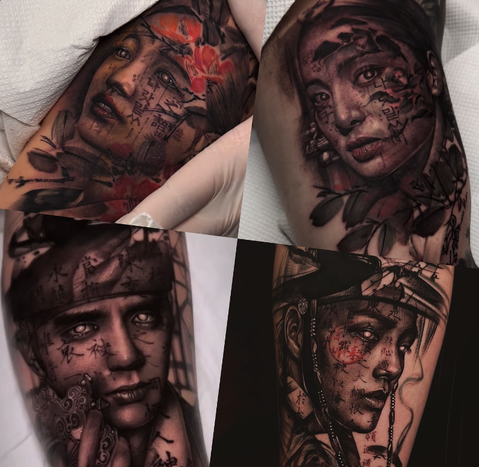
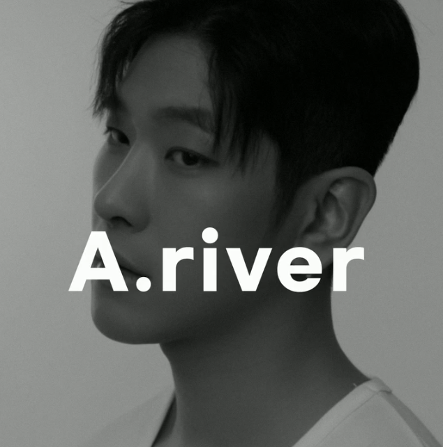
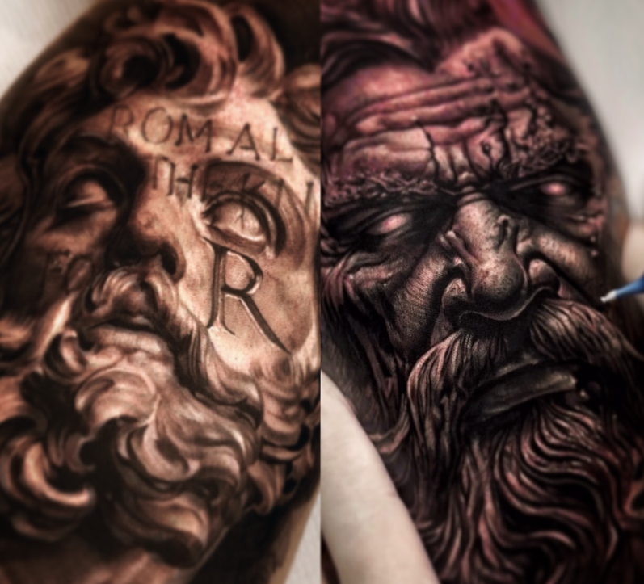
리얼리즘 타투중에서도 인물과 동물 위주의 표현을 매우 실사적으로 표현해내는 작업자 입니다.
INSTAGRAM : @adamriver_tattoo